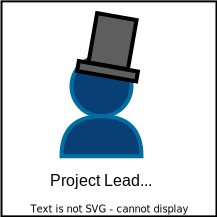

Roles overview
Overview

It is possible to have more than one role at the same time. Some roles require you to "enroll" in a project first. Enrollment requires an ASAM membership.
Role descriptions
The following table contains a list of the most prominent roles at ASAM and a short description for each of them.
Outside roles
(1) |
Someone who has access to and possibly is an active user of any ASAM standard. |
|
(2) |
A Standard User that participates in the review of one or more documents.
They are considered non-enrolled Reviewers. ASAM members can also enroll specifically as Reviewers for projects.
In this case, they become a participant that has committed a small amount of resources to support the project team with review focused activities.
This may include review of merge requests, proposals and/or review of documents.
|
Project roles
(3) |
An ASAM member participating in an ASAM project.
|
|
(4) |
 |
The Project Participant responsible for the project and leading the general project activities. |
(5) |
An active Project Participant leading the activities of a subgroup. |
Other roles
(6) |
ASAM contact of the project. |
|
(7) |
Editor and writing support. |
|
(8) |
Committee at ASAM reviewing a project’s state. |
Questions
Please reach out if you have any questions: project-office@asam.net